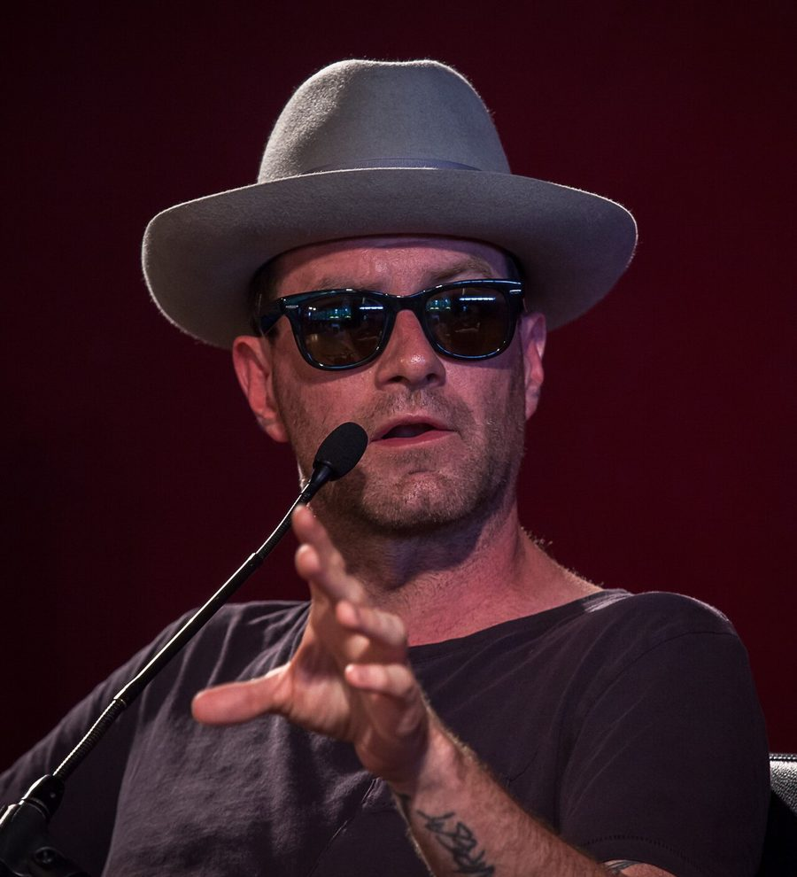

UNKLE’s James Lavelle locked for Club Club next Saturday


.jpg){kind=link}
James Lavelle is just about to enter the country to get onboard the Big Day Out juggernaut as it rolls around the country, to play live as part of UNKLE for the first time ever in Australia. But if you’re keen to also catch him in DJ mode then you’re in luck… He’ll be playing an intimate show for Club Club at the Chinese Laundry next Saturday. Too much Lavelle is never enough!
UNKLE shocked everyone when they dropped the critically-acclaimed War Stories LP last year: while in then past they’d been known for their revolutionary and leftfield hip hop sound, here they dropped a multi-layered, atmospheric slice of digital rock. When it comes to his selections as a DJ, Lavelle has been know in years past for his fluid combination of breaks, tech house, tribal and much more featured on his heralded Global Underground compilations. But late last year when he turned Australia he was pushing a sound that had wholly embraced the German minimal sound. What will we hear form him this time around? It’s impossible to know!
Catch James Lavelle when he takes control at The Club Club next Saturday 26th January, hand have a listen to our recent ITM interview with UNKLE…